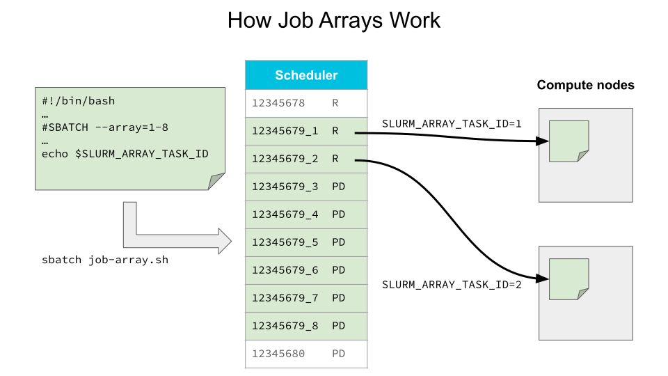
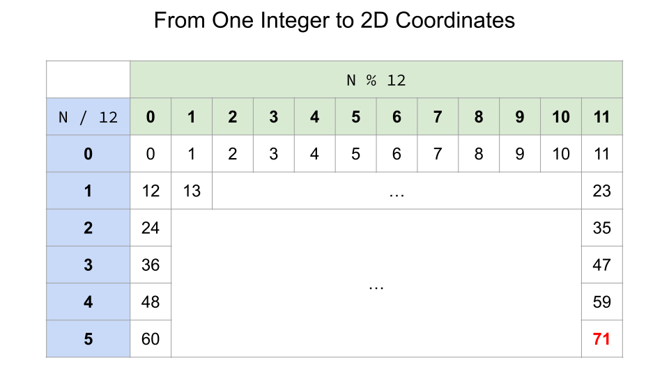

Task Arrays for Data Parallelism#
While high performance computing is usually designed for task parallelism, it can also be used to run multiple serial tasks simultaneously for data parallelism. This chapter will present useful tools to manage a large number of compute tasks when the research project requires hundreds of results.
GNU Parallel#
The GNU parallel command
allows to fully use the resources on a compute node by managing
the execution of a long list of small compute tasks.
This is like the Slurm scheduler, but at a smaller
scale and by managing processes instead of job scripts.

Why Not Slurm?#
Why not simply submit hundreds of jobs to Slurm?
At anytime, Slurm limits each user to 1000 jobs in its queue (including pending and running jobs)
Certain compute tasks are so short (< 5 minutes) that the time to properly start and end these tasks individually would significantly reduce their global efficiency
GNU Parallel advantages:
No need of using a loop, which makes it easier to manage hundreds of compute tasks
The number of available CPU cores automatically limits the number of simultaneous running tasks
For a set of parallel tasks, it is possible to specify a smaller number of processes than the number of CPU cores
GNU Parallel can resume the sequence of compute tasks in case of a job ending sooner than expected or what is needed
GNU Parallel Command Syntax#
The main basic elements of a parallel command are:
parallel options command_template ::: list of values
See the manual page:
man parallel # Press Q to quit
Use Cases#
One Sequence of Parameter Values#
The default placeholder for the changing parameter is {}:
parallel echo file{}.txt ::: 1 2 3 4
# parallel --citation # Commit to citing developers
We can rewrite the above command by using the Bash expansion {a..b}:
parallel echo file{}.txt ::: {1..4}
parallel echo file{}.txt ::: {01..10}
Multiple Combinations of Parameter Values#
a) When you have multiple sequences of parameters to combine,
you can use numbered placeholders, like {1} and {2}:
parallel echo file{1}{2}.txt ::: {01..10} ::: a b
b) In the case where all combinations of parameters are in a text file:
cat scripts/param.txt
The parallel command will have -C ' ' to specify
the separator between parameters in scripts/param.txt,
and the :::: argument to provide this filename:
# parallel -C ' ' echo '$(({1}*{2}))' :::: scripts/param.txt
cat scripts/prll-exec-param.sh
sbatch scripts/prll-exec-param.sh
c) If you prefer to validate a list of commands in a text file prior to their execution on the compute node:
cat scripts/cmd.txt
The job script will have a much simplified parallel command:
# parallel < scripts/cmd.txt
cat scripts/prll-exec-cmd.sh
sbatch scripts/prll-exec-cmd.sh
Limiting the Number of Simultaneous Processes#
The flag --jobs allows us to limit the number of
simultaneous running processes. For example, we can
have 8 tasks done with 2 simultaneous processes:
parallel --jobs 2 'echo {} && sleep 3' ::: {1..8}
Exercise - Aligning DNA Sequences#
In the directory data/, you should already have multiple
Fasta files (*.fa) that were created in the previous
chapter with the job script scripts/blastn-gen-seq.sh.
If this is not the case, run the following:
sbatch scripts/blastn-gen-seq.sh
You should find:
for each fictive species A, B, C and D, a file of “known” DNA sequences
These files are converted into a Blast database
for 16 “unknown” species K through Z, DNA sequences to align on “known” sequences of species A through D
We then want to compute the alignement of all
combinations {A,B,C,D} x {K,L,M,N,O,P,Q,R,S,T,U,V,W,X,Y,Z},
which makes 64 combinations to test.
The following job script uses GNU Parallel in order
to compute all combinations with 4 CPU cores:
cat scripts/blastn-parallel.sh
sbatch scripts/blastn-parallel.sh
To monitor the status of the compute job:
squeue -u $USER
ls data/res_prll/
At the end of the job, check used resources:
seff <job_id>
Other Tools#
GLOST for serial tasks only
META-Farm for the best of GNU Parallel and GLOST
While the above tools can be useful with a set of serial tasks or small parallel tasks (16 cores or less), they are not appropriate for long and large parallel jobs (more than 16 cores per task):
we want to avoid jobs longer than 3 days, and
we want to reduce the risk of being affected by a defective node.
That is why, in some cases, it is better to use job arrays.
Job Arrays#
In the case where a single program must be executed with different combinations of parameters, it is possible to submit a job array and write the job script such that parameters will be derived in function of one unique integer value of the job array.

To submit a job array to the Slurm scheduler, we must
add the option --array=<integers> to the #SBATCH header.
See some examples here.
A job ID in a job array contains:
The ID of the job array
The underscore character (
_)The unique integer associated to that job
For example: 25249551_15
In the job script, the environment variable
$SLURM_ARRAY_TASK_ID can be used to retrieve the
unique integer associated to the current running job.
It is one of the specified <integers> in the header.
The variable $SLURM_ARRAY_TASK_ID can be used in many ways.
The below examples use $N, but $SLURM_ARRAY_TASK_ID
works the same in a job script:
export N=71 # Only required for this example
echo file.$N
echo directory-$N

PARAM_R=$((N / 12)) # Integer division
PARAM_C=$((N % 12)) # Modulo (division remainder)
echo $PARAM_R $PARAM_C
head -n $((PARAM_R + 1)) scripts/param.txt | tail -1
Exercise - Job Arrays#
Submit the job array:
cat scripts/blastn-array.sh
sbatch scripts/blastn-array.sh
squeue -u $USER
Once all four jobs are done, inspect the results:
ls slurm-*_*.out
ls -l data/res_array/
Modify the job script to process all 16 unknowns K through Z, with a limit of four simultaneous processes per job
Submit this modified job array
Use the
seffcommand to investigate one of the 16 jobs
Key Points#
GNU Parallel to run multiple combinations of parameters
parallel 'command_template({1})' ::: values1
parallel 'command_template({1}, {2})' ::: values1 ::: values2
parallel -C <sep> 'command_template({1}, {2})' :::: param_pairs.txt
parallel --jobs 'N_processes_per_node' < command_list.txt
Job Arrays to submit many long or large similar jobs
# $SLURM_ARRAY_TASK_ID will have only one value of ...
sbatch --array=0-7 # [0, 7]
sbatch --array=1,3,5,7 # {1,3,5,7}
sbatch --array=1-7:3 # {1,4,7}
sbatch --array=0-99%10 # [0, 99], but maximum 10 simultaneous jobs